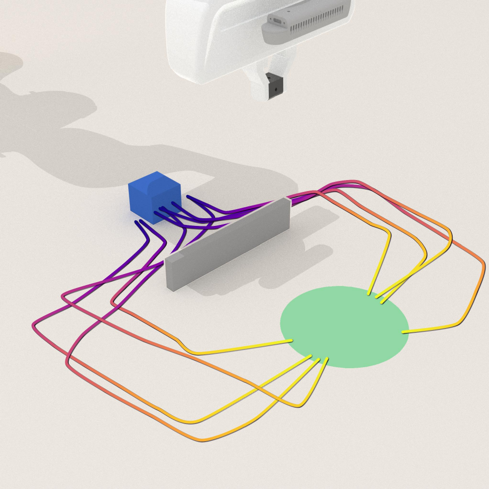

44
percentage-point average deployment success improvement over the original mixed policy.
Distilling Mode Redirection into Policy Weights without Inference-Time Steering
1Texas A&M University 2Stanford University 3University of Wisconsin 4Northwestern University † Project Lead
MoRE edits a mixed-mode behavior-cloned policy into a standalone desired-mode policy. A mode classifier supplies the training-time redirection signal; deployment uses the original inference path.
Behavior-cloned policies often learn multiple behavior modes from demonstration datasets, including modes that are unsafe, inconvenient, or otherwise undesired at deployment. Standard remedies such as data curation and inference-time steering either require full retraining or add extra computation to every control step.
MoRE redirects policy rollouts toward desired behavior modes through a short uncloning step. A behavior-mode classifier supplies a differentiable redirection signal during editing, while a retain loss preserves desired-mode competence. After editing, the classifier is no longer needed: the updated policy runs through the same inference path as the original policy.
percentage-point average deployment success improvement over the original mixed policy.
simulated and real-world tasks across manipulation and navigation.
editing gradient steps per target setting in our evaluations.
inference-time steering modules after the edit.
MoRE treats behavior mode control as a policy editing problem. It uses mode-labeled examples to train a mode classifier, then distills the desired redirection into the policy weights so the final policy can be deployed without an auxiliary steering module.
Fit a K-way classifier on features cached from the original mixed policy.
Use differentiable policy features to move probability mass toward the desired mode set.
Keep the original imitation loss on desired-mode samples and deploy the edited policy by itself.
Select a simulated task to inspect its representative MoRE rollout, trajectory summary, and reported outcome breakdown. MoRE changes the checkpoint offline, while runtime inference keeps the original policy path.
Representative edited rollout and reported outcome breakdown.

This is not a browser physics simulator. It is an interactive artifact viewer over the released project media and the paper's SR/TCR definitions: SR is target-aligned task success, while TCR counts task completion regardless of mode.
| Task | Modes | Original Avg SR | MoRE Avg SR | SR Gain (pp) | MoRE TCR |
|---|---|---|---|---|---|
| Push-T | left or right | 50.0% | 98.3% | +48.3 | 98.7% |
| Push-Wall | left or right | 37.0% | 80.7% | +43.7 | 80.7% |
| Push-Pillars | four routes | 21.5% | 72.3% | +50.8 | 80.7% |
| Quadruped | left or right | 50.0% | 84.3% | +34.3 | 84.7% |
Values report average deployment success rate (SR) and task completion rate (TCR) over target modes.
Across four real-robot tasks with a Franka Research 3 arm, MoRE shifts rollouts toward requested behavior modes while preserving task completion.
SR: 45.0 → 70.0 (+25.0).
| Task | Mode change | Original Avg SR | MoRE Avg SR | SR Gain (pp) | MoRE TCR |
|---|---|---|---|---|---|
| Place-Knife | 2 → 1 | 40.0% | 80.0% | +40.0 | 80.0% |
| Place-Bottle | 3 → 1 | 31.7% | 96.7% | +65.0 | 96.7% |
| Block-Obstacle | 2 → 1 | 47.5% | 92.5% | +45.0 | 92.5% |
| Knife-Handover (VLA) | 2 → 1 | 45.0% | 70.0% | +25.0 | 85.0% |
Values report average real-robot SR over target modes. Place-Bottle also supports a 3 → 2 edit, improving SR from 50.0% to 100.0%.
The longer video below shows additional task examples, rollouts, and qualitative results.